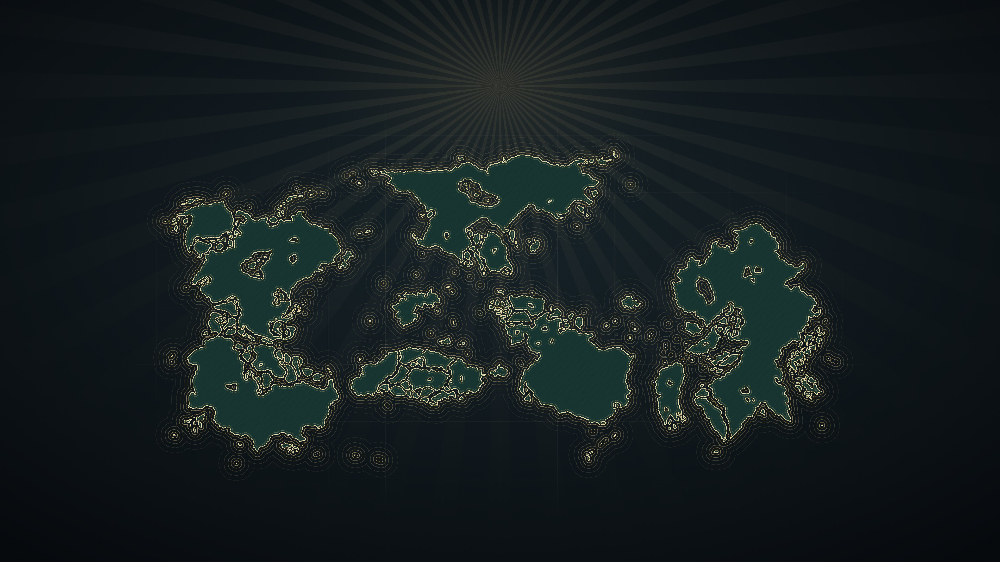

NONSCIO
ARASEOS
YASTREOVAKIA
AISLADA
SOLITAS
USNISTAN
ORIENTALIS
VALSORA
A Hearts of Iron IV total conversion
The world of The East Pacific
Tutorial
Multiplayer
SINGLE PLAYER
Settings
Credits
Quit
Valsora (test map) · v0.2
For Hearts of Iron IV 1.19.*
Valsora Radio
1:12 / 2:34
Entry of the Gladiators
· Julius Fučík